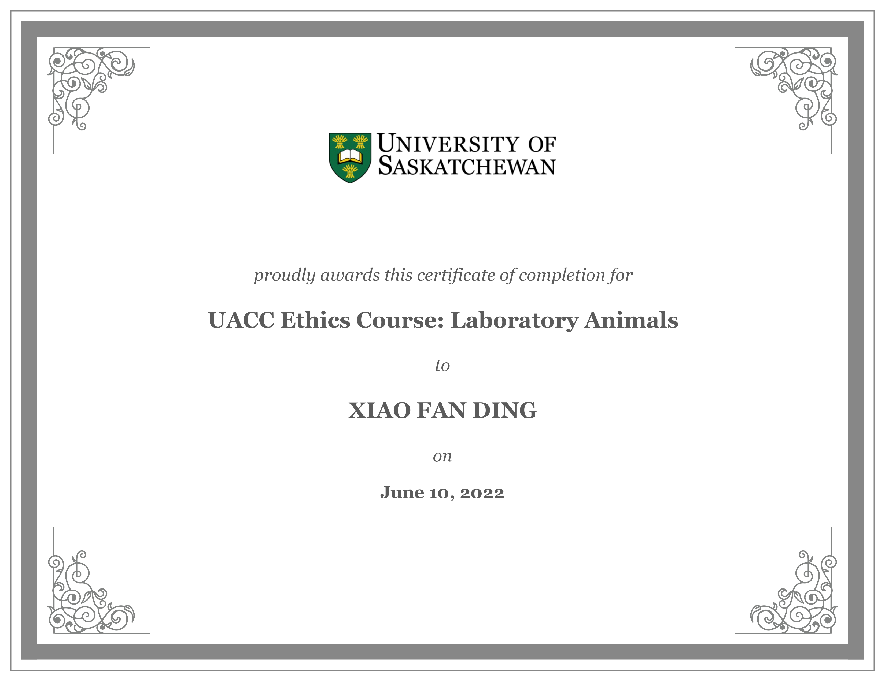
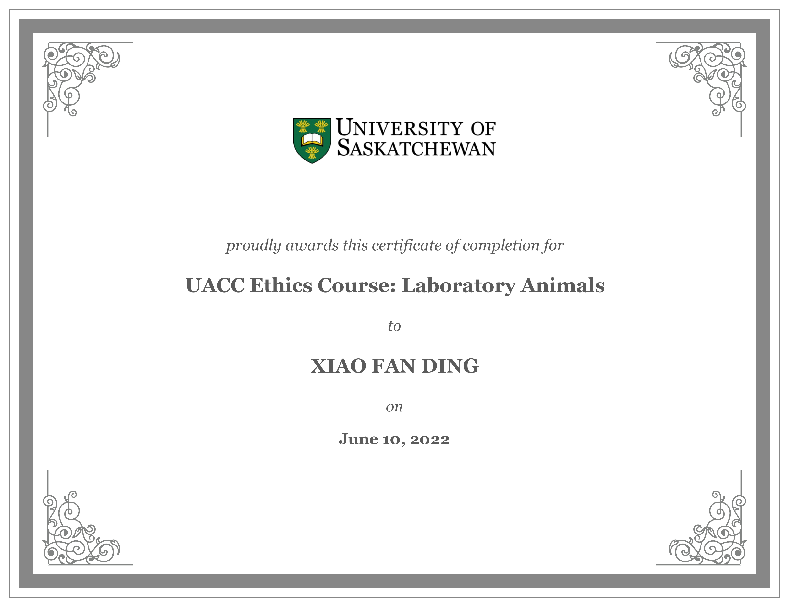
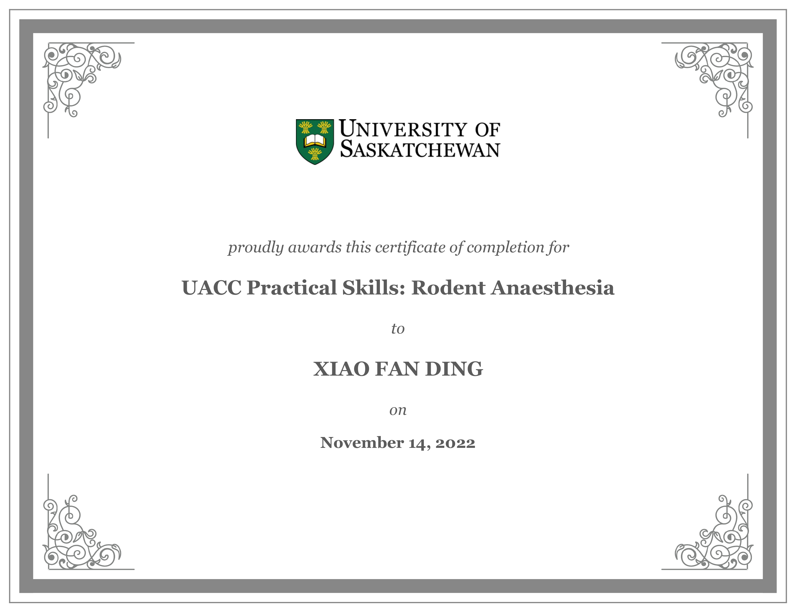
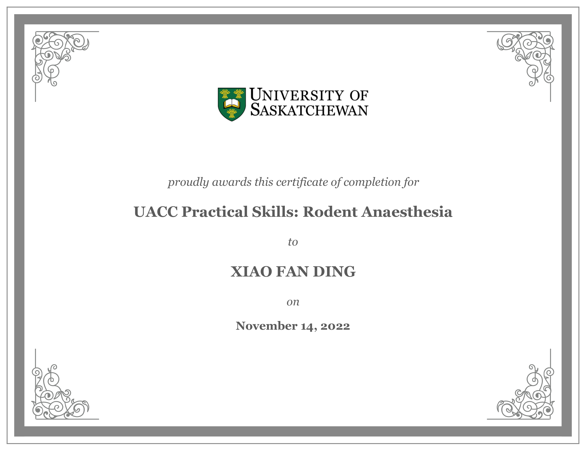

Learning Goals
Goal 1: Enhance my scientific communication skills
"Over this academic term, I aim to enhance my research presentation skills by actively participating in some upcoming conferences and meetings. My improvement will be measured by the number of attendees I successfully engage with at each event. Post-conference reflections and feedback will be used to continuously refine my presentation abilities, transforming initial fears of criticism into constructive interactions essential for my professional growth."
Specific: During this term, I want to improve my ability to present one of my research projects. I have some data collected earlier in May and August and have a manuscript draft completed. There are several conferences and meetings this semester where I can practice and present my research.
Measurable: My progress will be tracked by counting the number of attendees I engage with and introduce my research to at each conference.
Achievable: I will showcase my research project via poster presentations at three conferences: the Biofabrication conference in September, Canadian Light Source Annual User Meeting in October, and the INSPIRE Workshop in December. These conferences are designed to foster graduate students’ communication abilities. After each conference, I will reflect on feedback and refine my presentations.
Relevant: I remember at my first conference; I was so terribly afraid of criticism that I watched from afar as others walked by and glanced at my poster. I now know that engagement and feedback is critical for improving my work.
Time-bound: I aim to present at these conference presentations over the next 3 months to improve my scientific communication.
1. How will you develop the knowledge you need to meet your goals? I can attend webinars/workshops and read on how to communicate science. I can look into communicating at different levels i.e., teaching in a classroom setting or at academic conferences. There are often departmental conferences aimed at developing graduate student communication skills that are open to everyone. Some may be outside of my research area, but communication skills are transferable.
2. How will you practice the skills you need to meet your goals? I can practice these skills by conducting mock poster presentations to colleagues or friends before the actual conferences. Since I am part of a multidisciplinary group, there are many colleagues whose area of expertise differs from mine and those from completely different departments. I can practice explaining my research on different levels of base knowledge.
3. How will you ask for feedback about your progress, and from whom? After each mock presentation, I can ask for feedback on clarity, engagement, and effectiveness. After each conference presentation, I can ask attendees for their thoughts on your presentation style and content.
4. What evidence do you expect to collect of your learning and skill? I can record feedback received after each presentation and maintain a journal of lessons learned and areas of improvement after each conference.
Goal 2: Incorporate a new literature into my project
"I will integrate a novel image processing technique from the 2017 literature into my current project workflow within the next 3 months. Progress will be monitored through weekly code commits, with dedicated time each Thursday on a high-performance computer for understanding, implementation, and testing. This will update the technique to be compatible with current standards, ensuring its relevancy and application in my field."
Specific: I have found an interesting image processing technique in literature that is relevant to my project. I aim to incorporate this into my current project workflow.
Measurable: Because this is an image processing technique as a computer program, my progress can be tracked by my code commits over time.
Achievable: I will book a high performing computer every Thursday to dedicate time to understand, implement, and test this technique.
Relevant: Very often in my field, there are many small image processing programs created and forgotten about. The program that I am interested in reproducing was published in 2017 and has not seen an update since. It has since become incompatible with current standards.
Time-bound: I aim to have a working script in the next 3 months.
1. How will you develop the knowledge you need to meet your goals? I can take workshops on how to effectively conduct literature review. I can study the literature thoroughly to understand the image processing technique. I can look through the body of work cited and the works that have since cited my desired literature. I can enroll in online courses or workshops that teach the technique or similar methodologies. I can also use library resources to help me more effectively look for literature.
2. How will you practice the skills you need to meet your goals? To practice, I can use sample datasets to apply the technique and test its efficacy. A test dataset which I can keep as a control group and gradually over time, I can integrate the technique into my main project workflow.
3. How will you ask for feedback about your progress, and from whom? I can share my results with colleagues, my supervisor, and advisors who have greater expertise. I can also reach out to authors of the original literature for their insights, recommendations, and help on technical aspects.
4. What evidence do you expect to collect of your learning and skill? I can document the step-by-step process of integrating the technique. For scripts and computer programs, I can manage the progress through a version control platform like GitHub. This will save code versions, outputs, and any other technical documentation.
Goal 3: Better manage my time and my projects
"Within the next 3 months, I will better manage my time and projects by using a time tracking system to dedicate specific time blocks to various tasks and setting weekly achievable goals. My progress will be tracked by ensuring that I complete at least 90% of my goals. This will allow me to improve the quality of my research and meet deadlines with less stress."
Specific: I want to improve my time management by using a time tracking tool, or creating a tracking system, to allocate specific blocks of time to different research tasks and by defining daily/weekly achievable goals.
Measurable: I will measure my progress by completing set tasks within the allocated time frames and achieving goals, aiming for a 90% success rate each week.
Achievable: I will achieve this by breaking down my research into smaller tasks, prioritizing them, and using techniques like the Pomodoro Technique to maintain focus.
Relevant: Enhancing my time management skills will enable me to complete my research projects more efficiently, leading to higher quality work and the ability to meet deadlines without feeling overwhelmed.
Time-bound: I aim to establish these time management practices and achieve consistent goal completion within the next 3 months.
1. How will you develop the knowledge you need to meet your goals? I can read articles and books about effective time/project management strategies in academia and industry. I can attend webinars about task tracking systems.
2. How will you practice the skills you need to meet your goals? I will take the time to break down my major goals into smaller achievable tasks and assign a priority to each. I aim to stay within 80-90% completion rate.
3. How will you ask for feedback about your progress, and from whom? I will seek regular input from my supervisor experienced in project management and research efficiency, specifically after the completion of major tasks or milestones.
4. What evidence do you expect to collect of your learning and skill? I will keep notes and observations from self-reflection sessions and keep feedback from mentors, peers, and colleagues on my recent management efficiency.
Learning Artefacts


 

 
